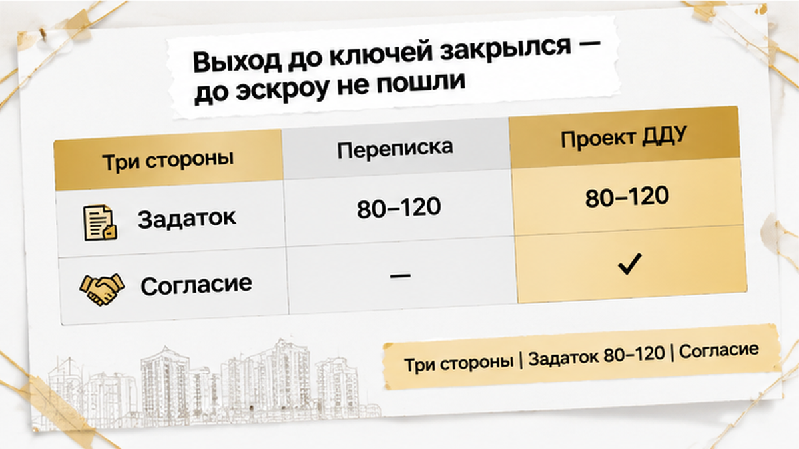
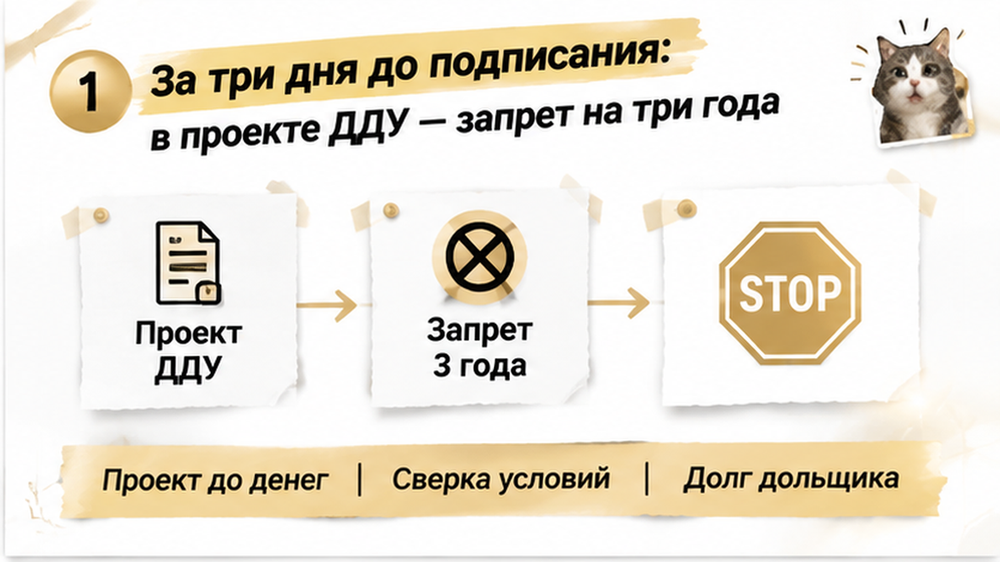

За три дня до сделки покупатель нашёл в проекте ДДУ запрет на переуступку квартиры в течение трёх лет — и остановил оформление, хотя под угрозой оказались 80–120 тысяч рублей задатка и комиссии. Он рассчитывал купить лот в тюменской новостройке дешевле цены застройщика, дождаться роста стоимости и выйти из сделки ещё до ключей. В переписке всё выглядело обычно, но перед подписанием прислали сам договор, и одна формулировка закрыла весь план. Деньги ещё не ушли в окончательные расчёты — проверка успела сработать.
Я Святослав Шакин, The Риэлтор, Тюмень. Разбираю переуступки и проекты ДДУ до денег: Telegram и MAX.
Логика покупки была простой. Первый дольщик забронировал квартиру раньше и теперь передавал её другому покупателю: уже известны этаж, планировка, сторона света и срок сдачи, а цена выглядит интереснее, чем у застройщика. Для семьи это способ взять подходящий вариант, пока он не подорожал или не исчез. Для инвестора — возможность войти в проект на одном этапе, а выйти на следующем, когда стоимость вырастет.
Именно на этом держалась вся экономика. Покупатель не собирался обязательно ждать окончания строительства: после роста цены он рассчитывал передать право следующему человеку ещё до получения ключей. Значит, ему нужна была не просто квартира, а право требования по ДДУ, которым можно будет распорядиться дальше. Если такая возможность исчезает, меняется сам смысл покупки.
В переписке препятствия не было видно: обсуждали лот, стоимость, порядок оформления и согласование с застройщиком. Но переуступка — не передача брони и не смена фамилии в заявке. Новый покупатель принимает права и обязанности первого дольщика по ДДУ, поэтому до задатка нужен сам проект договора и документы, по которым застройщик будет согласовывать переход права.
Объявление показывает только привлекательную часть сделки. В другой проверке по тюменской новостройке важное ограничение обнаружилось не в рекламе, а в проектной декларации и статусе земли. Здесь решающим оказался проект самого ДДУ.

В сделке участвуют новый покупатель, первый дольщик и застройщик. Уступка права требования связана с условиями ДДУ и согласованием застройщика, поэтому фразы «там всё одобрят» недостаточно. До передачи денег нужно понять, что именно согласуют, какие документы попросят и нет ли запрета на дальнейшую передачу права.
Покупатель оценивал не только цену квартиры, но и возможность выйти из сделки позже. Поэтому 80–120 тысяч рублей задатка и комиссии становились отдельным риском: если ограничение обнаружить после окончательной оплаты, быстро отступить будет намного сложнее.
До подписания и расчётов ещё оставалось пространство для паузы: запросить проект договора, задать вопросы застройщику и проверить, что именно приобретает новый дольщик. Пока деньги не ушли дальше задатка и комиссии, у покупателя есть выбор.
Особенно опасна мысль: «Осталось только подписать». Внесённые деньги не делают неудобное условие безопасным. Если квартира нужна для последующей переуступки, стоит заранее сверить формулировки о передаче права, согласии застройщика, платежах и сроке, в течение которого перепродажа запрещена или затруднена.
Пока этих условий нет перед глазами, сравнивать лот с квартирой от застройщика рано. Цена может быть ниже, но свобода распоряжения правом — намного уже.
Проект ДДУ покупатель увидел за три дня до сделки. До этого обсуждали цену, дату подписания и порядок переуступки, но отдельной строки о запрете быстро выйти из сделки не было.
Ограничение нашлось внутри договора: уступка прав по ДДУ в течение трёх лет не допускается. Квартиру купить было можно, но передать право следующему покупателю до истечения срока — уже нет.
Для этой сделки разница оказалась решающей. Покупатель рассматривал новостройку как актив: зайти сейчас, дождаться роста цены и выйти до получения ключей. Запрет закрывал этот маршрут. Оставался другой вариант — дождаться ключей, оформить собственность и продавать готовую квартиру. Это другие сроки, расходы и налоговые последствия.
Такое ограничение не обязательно выглядит как фраза «продажа запрещена». Оно может стоять среди пунктов о передаче прав, согласовании с застройщиком и расчётах. Если смотреть только объявление или сообщения менеджера, его легко пропустить.
Проект договора прочитали до внесения денег и окончательного подписания. Выяснилось: квартиру купить можно, но использовать по первоначальному плану — нет. Для семьи, которая берёт её для жизни, ограничение могло быть терпимым. Для инвестора, рассчитывающего на переуступку через год или два, оно перекрывало главную часть стратегии.
По 214-ФЗ уступка права требования по ДДУ связана с условиями самого договора и расчётами по нему. В конкретной сделке может потребоваться согласование застройщика и выполнение дополнительных условий. Поэтому фразы «переуступка возможна» в объявлении недостаточно: нужно увидеть, что именно разрешает проект ДДУ и на какой срок.
После обнаружения запрета покупатель остановил оформление. До подписания документов и открытия эскроу дело не дошло: сначала нужно было понять, можно ли изменить условие или получить от застройщика письменное подтверждение, что переуступку разрешат раньше трёх лет.
Риск уже был связан с деньгами, которые могли остаться в сделке в виде задатка и комиссии. Речь шла примерно о 80–120 тысячах рублей. Сумма неприятная, но меньше цены ошибки — купить объект на условиях, не соответствующих плану выхода.
Если бы проект ДДУ прочитали после оплаты, пришлось бы разбираться, можно ли вернуть задаток, кто отвечает за отказ от сделки и удержит ли кто-то комиссию. Пока договор не подписан и деньги не ушли в расчёты, у покупателя больше пространства для решения: запросить изменение пункта, выбрать другой лот или отказаться от схемы.
Квартира не становится плохой из-за такого ограничения. Она может подойти человеку, который готов ждать окончания строительства и потом оформлять собственность. Но для покупателя, рассчитывающего выйти до ключей, этот лот уже не соответствует задаче.
Поэтому проект ДДУ нельзя оставлять на самый конец — после одобрения ипотеки, согласования даты и внесения денег. Переписка показывает, о чём стороны договорились на словах. Договор определяет, какие действия действительно разрешены.
Если за 3 дня до сделки в документах всплывает запрет уступки на 3 года — добиваетесь изменения условия или ищете другой лот, даже рискуя комиссией?

До денег нужен не красивый офер и не обещание менеджера, что «всё обычно проходит», а проект договора участия в долевом строительстве, по которому первый дольщик получил право на квартиру. Именно там может быть условие, меняющее весь расчёт: уступка возможна только с согласия застройщика, ограничена по сроку или запрещена до определённого события.
Попросите проект ДДУ до передачи комиссии и задатка. Сверьте номер квартиры, площадь и цену, а также порядок передачи прав, согласования уступки, оплаты, штрафов и расторжения. Если перепродать право нельзя три года, для инвестора это не техническая строчка, а закрытый выход до ключей.
Отдельно выясните, кто подписывает документы и как застройщик даёт согласие. Нужна понятная процедура: кто подаёт заявление, в какой форме оформляется согласие, сколько это занимает и какие платежи потребуются.
Проверьте задолженность первого дольщика: она может повлиять на регистрацию уступки и итоговую сумму сделки. В договоре уступки должны быть указаны цена, порядок расчётов, момент перехода права, ответственность сторон и судьба задатка, если застройщик не согласует сделку.
Условия сопоставьте с проектной декларацией и документами проекта. Обещание в переписке их не заменяет. Такой же разрыв между рекламой и документами обнаружился в этом разборе по Тюменю: в брони обещали одну дату, а в декларации стояла другая.
Ипотечные условия тоже проверяйте отдельно. Банк может изменить решение незадолго до подписания ДДУ — похожая ситуация описана в другом кейсе. Согласованная цена квартиры ещё не означает, что вся схема сделки собрана.
Сначала проект ДДУ и порядок согласования, потом комиссия и задаток. Если продавец или посредник меняет эти шаги местами, риск уже находится в сумме, которую вас просят внести.
| Что проверить | Где искать | Что должно быть понятно до оплаты |
|---|---|---|
| Можно ли уступить право | Проект ДДУ, раздел о передаче прав | Есть ли запрет, срок ограничения и исключения из него |
| Нужно ли согласие застройщика | ДДУ и правила застройщика по уступке | Форма согласия, срок рассмотрения, платежи и ответственный за подачу |
| Есть ли долг по квартире | Расчёты по ДДУ, справка или подтверждение застройщика | Кто погашает задолженность и как это отражается в договоре уступки |
| Что будет с задатком | Соглашение о задатке и договор уступки | Условия возврата, если согласование не получено или регистрацию приостановили |
| Совпадают ли обещания с документами | Переписка, офер, проект ДДУ, проектная декларация | Нет ли важных условий только в рекламе или устных сообщениях |
Если ограничение обнаружили за три дня до сделки, остановиться — не значит отказаться от новостроек. Это значит не платить за право, которым нельзя будет воспользоваться. Можно запросить письменную позицию застройщика, изменить условие, выбрать другой лот или вернуть переговоры на этап, где деньги ещё не потеряны.
Переуступка становится спокойнее не тогда, когда все говорят «успеем», а когда проект ДДУ заранее подтверждает: выход действительно возможен. Проверка до комиссии и задатка оставляет выбор, после оплаты — часто только спор о возврате денег.